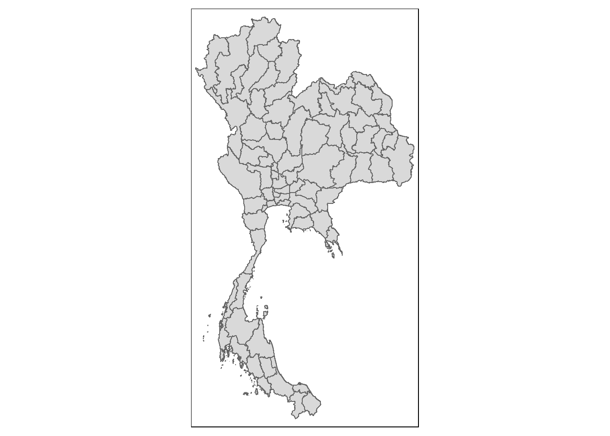

pacman::p_load(sf, tmap, sfdep, tidyverse,
ggpubr, heatmaply, factoextra,
NbClust, cluster, ClustGeo)Discovering Impact of COVID-19 on Thai Tourism Economy
(Exercise Summary)
A. Getting Started
A.1 Background
Tourism is a major industry in Thailand as it made up to 20% of their gross domestic product pre-pandemic. However, like the rest of the world, the industry has taken a hit with COVID-19 in 2020, and has slowly been recovering since 2021. Recent reports are stating that Thailand is already, but still, at 80% of its peak level in 2019.
While we speak about the industry in general, the state of tourism within Thailand, and their recovery status are not the same. For example, tourism revenues have been focused on Bangkok, Phuket and Chonburi pre-pandemic.
We are interested in understanding the state of tourism across Thailand with regards to its spatial distribution and time and space distribution– both in absolutes and in terms of the trend with respect to the pandemic.
A.2 Objectives
For this study, we want to understand the state of tourism in Thailand at a provincial level, and answer the following questions:
Are the key tourism indicators in Thailand (at a province level) independent from space and from space and time?
If tourism or any tourism indicators are not independent, what are the clusters, outliers and emerging hotspots and coldspots?
We will use the appropriate packages in R in order to perform the different analysis (spatial and otherwise) to support our answers to the above questions.
A.3 Data Sources
The following data sources are used for this analysis:
Thailand Domestic Tourism Statistics from Kaggle covering the years 2019-2023 and are at province and month level across 8 indicators:
no_tourist_all- total number of domestic touristsno_tourist_foreign- number of foreign touristsno_tourist_occupied- number of hotel rooms occupiedno_tourist_thai- number of Thai touristsoccupancy_rate- the percentage of occupied travel accommodationsrevenue_all- total tourism revenue, in THBrevenue_foreign- revenue generated by foreign tourists, in THBrevenue_thai- revenue generated by Thai tourists, in THB
Thailand-Subnational Administrative Boundaries from Human Data Exchange in shapefile format
A.4 Importing and Launching R Packages
For this study, the following R packages will be used. A description of the packages and the code, using p_load() of the pacman package, to import them is given below.
The loaded packages include:
sf - package for importing, managing and processing vector-based geospatial data
tidyverse - collection of packages for performing data importation, wrangling and visualization
tmap - package with functions for plotting cartographic quality maps
sfdep - for handling spatial data
coorplot, ggpubr, heatmaply, factoextra - packages for multivariate data visualization and analysis
cluster, ClustGeo, NbClust - packages for performing cluster analysis
As we will be performing simulations in the analysis later, it is good practice to define a random seed to be used so that results are consistent for viewers of this report, and the results can be reproduced.
set.seed(1234)B. Data Loading and Preparation
B.1. Thailand Subnational Boundary, Provincial Level
We load the Thailand subnational administrative boundary shapefile into an R dataframe using st_read() from the sf package. We need to analyze at the provincial level so we will be using the files suffixed by “1”.
thai_sf <- st_read(dsn="data/geospatial",
layer="tha_admbnda_adm1_rtsd_20220121")Reading layer `tha_admbnda_adm1_rtsd_20220121' from data source
`C:\drkrodriguez\ISSS626-GAA\Take-home\Take-home_Ex02\data\geospatial'
using driver `ESRI Shapefile'
Simple feature collection with 77 features and 16 fields
Geometry type: MULTIPOLYGON
Dimension: XY
Bounding box: xmin: 97.34336 ymin: 5.613038 xmax: 105.637 ymax: 20.46507
Geodetic CRS: WGS 84The output states that the object is of multipolygon geometry type containing 77 features (records) across 16 fields. (columns) We can check the contents of the object using a number of methods. For the code chunk below, we use glimpse() which lists the columns, gives the data type and the first elements.
glimpse(thai_sf)Rows: 77
Columns: 17
$ Shape_Leng <dbl> 2.417227, 1.695100, 1.251111, 1.884945, 3.041716, 1.739908,…
$ Shape_Area <dbl> 0.13133873, 0.07926199, 0.05323766, 0.12698345, 0.21393797,…
$ ADM1_EN <chr> "Bangkok", "Samut Prakan", "Nonthaburi", "Pathum Thani", "P…
$ ADM1_TH <chr> "กรุงเทพมหานคร", "สมุทรปราการ", "นนทบุรี", "ปทุมธานี", "พระนครศรีอ…
$ ADM1_PCODE <chr> "TH10", "TH11", "TH12", "TH13", "TH14", "TH15", "TH16", "TH…
$ ADM1_REF <chr> NA, NA, NA, NA, NA, NA, NA, NA, NA, NA, NA, NA, NA, NA, NA,…
$ ADM1ALT1EN <chr> NA, NA, NA, NA, NA, NA, NA, NA, NA, NA, NA, NA, NA, NA, NA,…
$ ADM1ALT2EN <chr> NA, NA, NA, NA, NA, NA, NA, NA, NA, NA, NA, NA, NA, NA, NA,…
$ ADM1ALT1TH <chr> NA, NA, NA, NA, NA, NA, NA, NA, NA, NA, NA, NA, NA, NA, NA,…
$ ADM1ALT2TH <chr> NA, NA, NA, NA, NA, NA, NA, NA, NA, NA, NA, NA, NA, NA, NA,…
$ ADM0_EN <chr> "Thailand", "Thailand", "Thailand", "Thailand", "Thailand",…
$ ADM0_TH <chr> "ประเทศไทย", "ประเทศไทย", "ประเทศไทย", "ประเทศไทย", "ประเทศ…
$ ADM0_PCODE <chr> "TH", "TH", "TH", "TH", "TH", "TH", "TH", "TH", "TH", "TH",…
$ date <date> 2019-02-18, 2019-02-18, 2019-02-18, 2019-02-18, 2019-02-18…
$ validOn <date> 2022-01-22, 2022-01-22, 2022-01-22, 2022-01-22, 2022-01-22…
$ validTo <date> -001-11-30, -001-11-30, -001-11-30, -001-11-30, -001-11-30…
$ geometry <MULTIPOLYGON [°]> MULTIPOLYGON (((100.6139 13..., MULTIPOLYGON (…For clarity, we can clean up this dataframe by:
- Keeping only relevant columns: The province name and code, geometry
- Renaming the columns: change ADM1 to Province
The following code chunk executes these steps by using select() for the first step and rename() for the second step. We again use glimpse() to give a preview of the dataset’s columns.
thai_sf <- thai_sf %>%
select(ADM1_EN, ADM1_PCODE, geometry) %>%
rename(Province = ADM1_EN, ProvCode = ADM1_PCODE)
glimpse(thai_sf)Rows: 77
Columns: 3
$ Province <chr> "Bangkok", "Samut Prakan", "Nonthaburi", "Pathum Thani", "Phr…
$ ProvCode <chr> "TH10", "TH11", "TH12", "TH13", "TH14", "TH15", "TH16", "TH17…
$ geometry <MULTIPOLYGON [°]> MULTIPOLYGON (((100.6139 13..., MULTIPOLYGON (((…We can check if there are any missing values by using is.na() and then check across each column using colSums() from Base R.
colSums(is.na(thai_sf))Province ProvCode geometry
0 0 0 The output shows that there are no missing values for any of the retained columns.
Finally, we can quickly check if the object depicts Thailand properly by producing a quick map using qtm() from tmap package.
qtm(thai_sf)
B.2. Thailand Tourism Data by Province, Jan 2019 - Feb 2023
The code chunk below loads the tourism statistics data into a dataframe tourism. We use read_csv() to import the data from the file.
tourism <- read_csv("data/aspatial/thailand_domestic_tourism_2019_2023_ver2.csv")Rows: 30800 Columns: 7
── Column specification ────────────────────────────────────────────────────────
Delimiter: ","
chr (5): province_thai, province_eng, region_thai, region_eng, variable
dbl (1): value
date (1): date
ℹ Use `spec()` to retrieve the full column specification for this data.
ℹ Specify the column types or set `show_col_types = FALSE` to quiet this message.We can check the contents by using the code chunk below.
tourism# A tibble: 30,800 × 7
date province_thai province_eng region_thai region_eng variable value
<date> <chr> <chr> <chr> <chr> <chr> <dbl>
1 2019-01-01 กรุงเทพมหานคร Bangkok ภาคกลาง central ratio_t… 93.4
2 2019-01-01 ลพบุรี Lopburi ภาคกลาง central ratio_t… 61.3
3 2019-01-01 พระนครศรีอยุธยา Phra Nakhon S… ภาคกลาง central ratio_t… 73.4
4 2019-01-01 สระบุรี Saraburi ภาคกลาง central ratio_t… 67.3
5 2019-01-01 ชัยนาท Chainat ภาคกลาง central ratio_t… 79.3
6 2019-01-01 นครปฐม Nakhon Pathom ภาคกลาง central ratio_t… 71.7
7 2019-01-01 สิงห์บุรี Sing Buri ภาคกลาง central ratio_t… 64.6
8 2019-01-01 อ่างทอง Ang Thong ภาคกลาง central ratio_t… 71.2
9 2019-01-01 นนทบุรี Nonthaburi ภาคกลาง central ratio_t… 75.1
10 2019-01-01 ปทุมธานี Pathum Thani ภาคกลาง central ratio_t… 60.8
# ℹ 30,790 more rowsThe imported data contains 7 fields and 30,800 records at a province and month level.
Before we analyze the dataset, let use remove unnecessary columns and rename the column names, similar to the previous dataset, using the code chunk below. (by using select() and rename())
tourism <- tourism %>%
select(date, province_eng, region_eng, variable, value) %>%
rename(Date = date, Province = province_eng, Region = region_eng, Indicator = variable, Value = value)
head(tourism)# A tibble: 6 × 5
Date Province Region Indicator Value
<date> <chr> <chr> <chr> <dbl>
1 2019-01-01 Bangkok central ratio_tourist_stay 93.4
2 2019-01-01 Lopburi central ratio_tourist_stay 61.3
3 2019-01-01 Phra Nakhon Si Ayutthaya central ratio_tourist_stay 73.4
4 2019-01-01 Saraburi central ratio_tourist_stay 67.3
5 2019-01-01 Chainat central ratio_tourist_stay 79.3
6 2019-01-01 Nakhon Pathom central ratio_tourist_stay 71.7We have kept only five of the columns which provides the date, the English descriptions for the location (province and region) as well as the (potential) tourism indicator and its value.
We can also check for any missing values across these five columns using the code below. (using is.na() and colSums())
colSums(is.na(tourism)) Date Province Region Indicator Value
0 0 0 0 0 We check the (WIP)